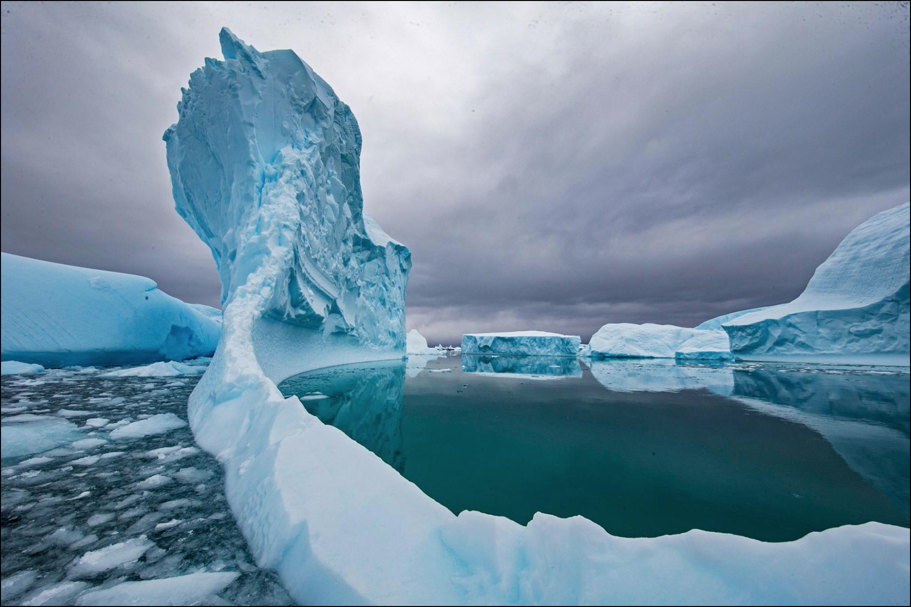

General Causes an Effects
Glaciers are melting, sea levels are rising, cloud forests are dying, and wildlife is scrambling to keep pace. It has become clear that humans have caused most of the past century's warming by releasing heat-trapping gases as we power our modern lives. Called greenhouse gases, their levels are higher now than at any time in the last 800,000 years.
We often call the result global warming, but it is causing a set of changes to the Earth's climate, or long-term weather patterns, that varies from place to place. While many people think of global warming and climate change as synonyms, scientists use “climate change” when describing the complex shifts now affecting our planet’s weather and climate systems—in part because some areas actually get cooler in the short term.
Climate change encompasses not only rising average temperatures but also extreme weather events, shifting wildlife populations and habitats, rising seas, and a range of other impacts. All of those changes are emerging as humans continue to add heat-trapping greenhouse gases to the atmosphere, changing the rhythms of climate that all living things have come to rely on.
